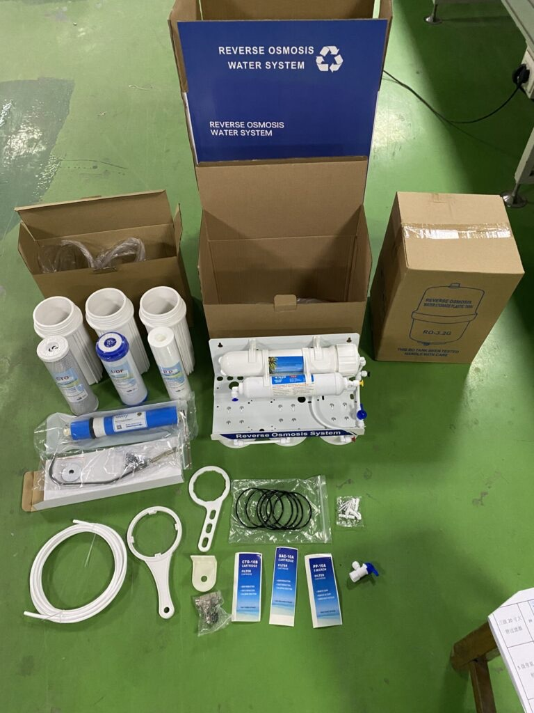
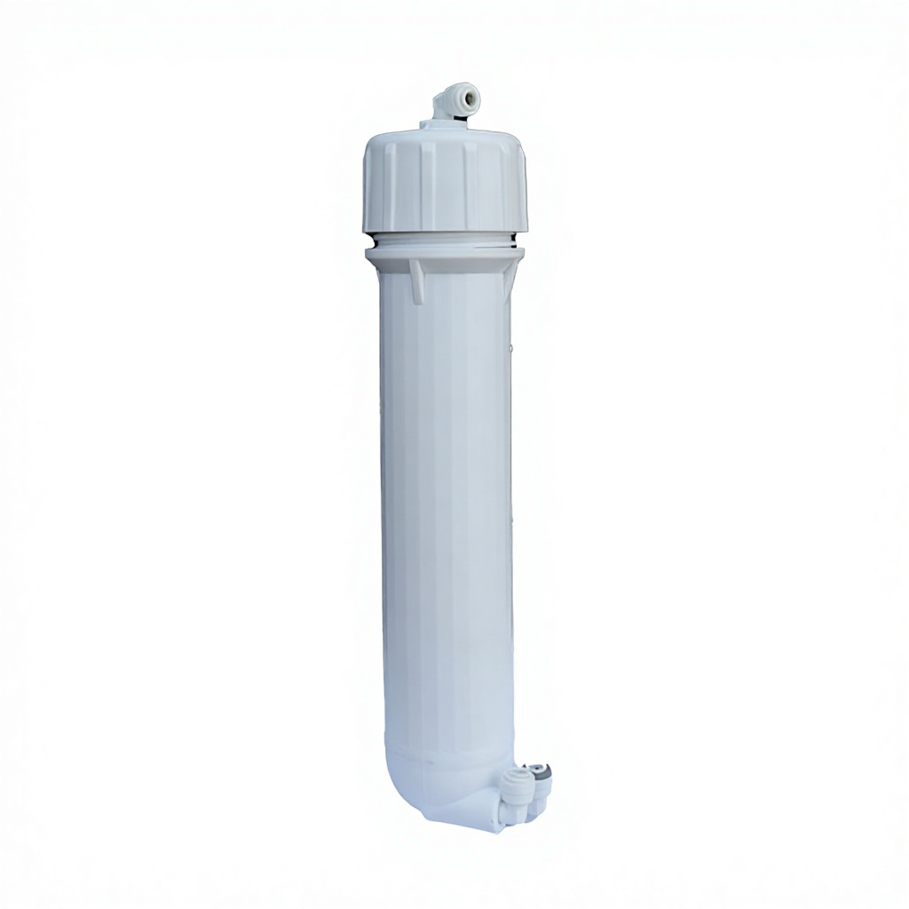

Under-Sink Reverse Osmosis Water Filter
Gravity-fed RO system relying on incoming water pressure to push water through the RO membrane. Multi-stage: sediment filter, carb...
View Details →
A reverse osmosis (RO) water filter system that is installed under the sink and does not use a pump is known as a gravity-fed reverse osmosis system. These systems rely on water pressure from the incoming water supply to push water through the RO membrane. Gefabriceerd in onze ISO 9001:2015 gecertificeerde faciliteit van meer dan 20.000 m² in Yuanhua Town, Haining City, Zhejiang, China, dit product maakt deel uit van onze volledige waterfiltratielijn — onafhankelijk getest volgens NSF/ANSI 42 & 53 normen door SGS, met CE-markering voor Europese importconformiteit en FDA-kwaliteit materiaalverklaringen op aanvraag. OEM/ODM private-label aanpassing is beschikbaar: merkbedrukking, aangepaste eindkapvorming, kleurafstemming en verpakking. Standaard MOQ vanaf 1.000 stuks; bulk groothandel FOB Shanghai/Ningbo met T/T 30/70 of L/C op zicht betalingsvoorwaarden. We exporteren momenteel naar meer dan 50 landen, waaronder de VS, Duitsland, Rusland, Saoedi-Arabië, Maleisië, Indonesië en Brazilië, met volledige halal-certificering.
| Filtratiestadia | 5-stage / 6-stage / 7-stage RO + UV (configurable) |
|---|---|
| Membraantype | Thin-Film Composite (TFC) Polyamide |
| Outputcapaciteit | 50 / 75 / 100 / 200 / 400 / 600 GPD |
| Zoutafstotingspercentage | ≥ 96% – 99% |
| Werkdruk | 0.1 – 0.4 MPa (0.7 MPa with booster pump) |
| Puur-naar-afval verhouding | 1:1 – 1:3 (configurable) |
| Opslagtank | 3.2 / 4.4 / 5.5 gallon (NSF-listed) |
| Certificeringen | NSF/ANSI 58, ISO 9001:2015, CE, SGS, WQA Gold Seal (option) |
| Capaciteit | 400 GPD |
| Type | Gravity-fed |
| Stadia | Meertraps |
← Back to All Products Producten

Gravity-fed RO system relying on incoming water pressure to push water through the RO membrane. Multi-stage: sediment filter, carb...
View Details →